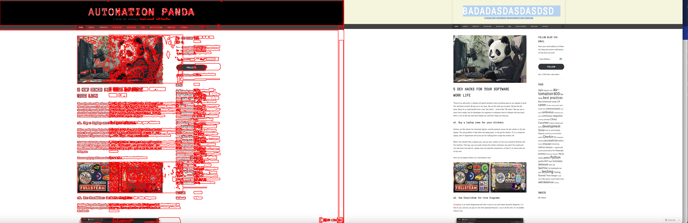

Reporte de Bugs Visuales
-
Fecha: 2025-04-18T20:36:17.591678
Imagen evaluada: tests/bug3.png
Tipo: 1. **Tipo de Bug: Layout**
- **Elementos afectados:**
- Logo del blog en la cabecera
- Texto del logo de la cabecera
- **Severidad:** 4
2. **Tipo de Bug: Contenido**
- **Elementos afectados:**
- Texto del logo en la cabecera, que ha sido alterado a "BADADASDASDASDSD"
- **Severidad:** 5
3. **Tipo de Bug: Color**
- **Elementos afectados:**
- Fondo de la sección "Follow Blog Via Email" y otros elementos interactivos ha cambiado a un color más oscuro
- **Severidad:** 3
Estos bugs afectan tanto la estética general del sitio como la legibilidad y usabilidad del mismo, especialmente el cambio de texto en el logo, que podría confundir o desorientar a los usuarios.
Área afectada: Área no especificada
Diferencia visual:
